できること
工程を切り分けず、まとめて引き受けます。お客様が材料屋・加工屋・ めっき屋と別々にやりとりする必要はありません。
-
材料手配
ステンレス・アルミ・クロモリなど、図面に指定された材料を当社で発注します。 材料の支給がなくても製作を進められます。
-
5軸加工・マシニング
牧野V33i・V56・V77、Mazak VTC530/20、BROTHER SPEEDIO S700X2、 ファナック ロボドリル、DMG MORI NLX2000 で削り出します。 一度の段取りで多面を加工し、付け替えによる誤差を抑えます。
-
ワイヤーカット加工
三菱 NA2400 により、上下で形状の異なる部品や、 刃物では削れない硬い材料の輪郭を加工します。
-
研削加工
Okamoto CNC高精度成形研削盤 HPG500NC、ナガセ SGE-520-BLD2 PCNC、 日立ビア GHL-B306NS で、面と寸法を仕上げます。鏡面仕上げにも対応します。
-
3D計測・データ作成
GOM社 ATOS Core による非接触三次元測定で、現物から形状データを取得します。 STL・CADデータの作成、Geomagic DesignX でのデータ編集に対応。 図面のない部品の製作もご相談ください。
-
検査・表面処理
三次元測定機 CRYSTA-APEX7106、画像測定器 QV-ELF で検査します。 表面処理は協力工場へ当社から発注し、完成品としてお届けします。
加工実績
すべて自社で加工した部品です。写真のスケールは実寸の目安としてご覧ください。
-
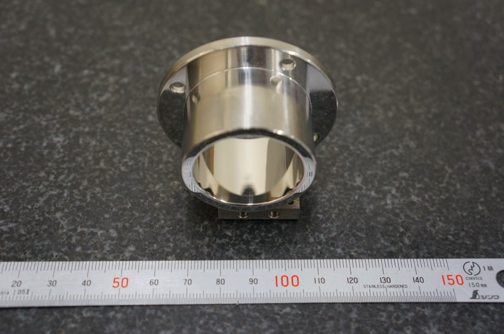
SUS304 鏡面仕上げ部品 -
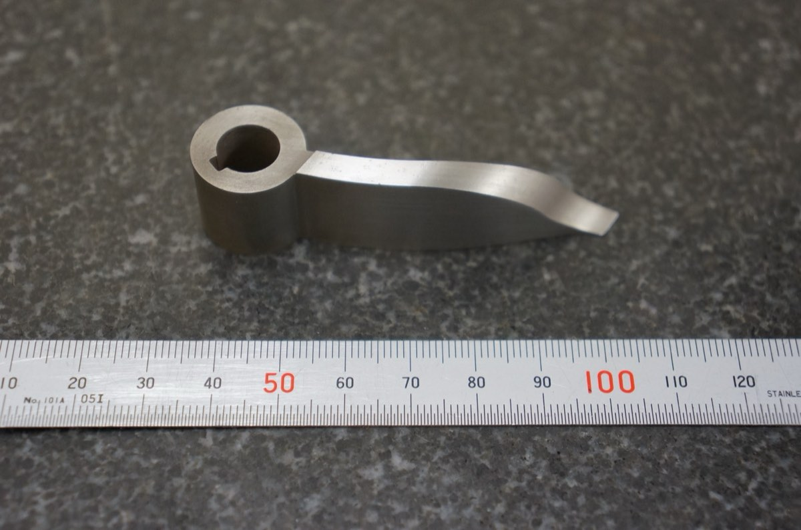
SCM435 ワイヤーカット上下異形状加工部品 -
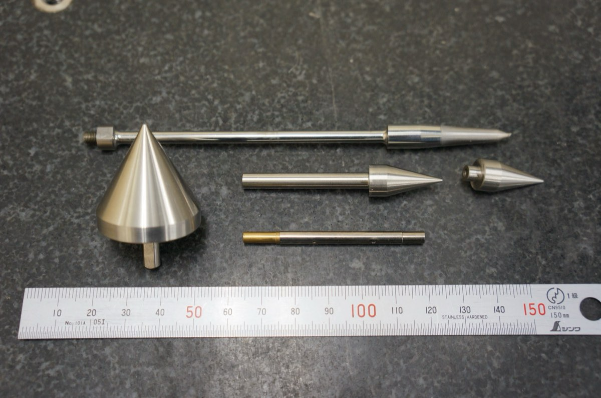
SUS420J2 円筒研磨部品 -
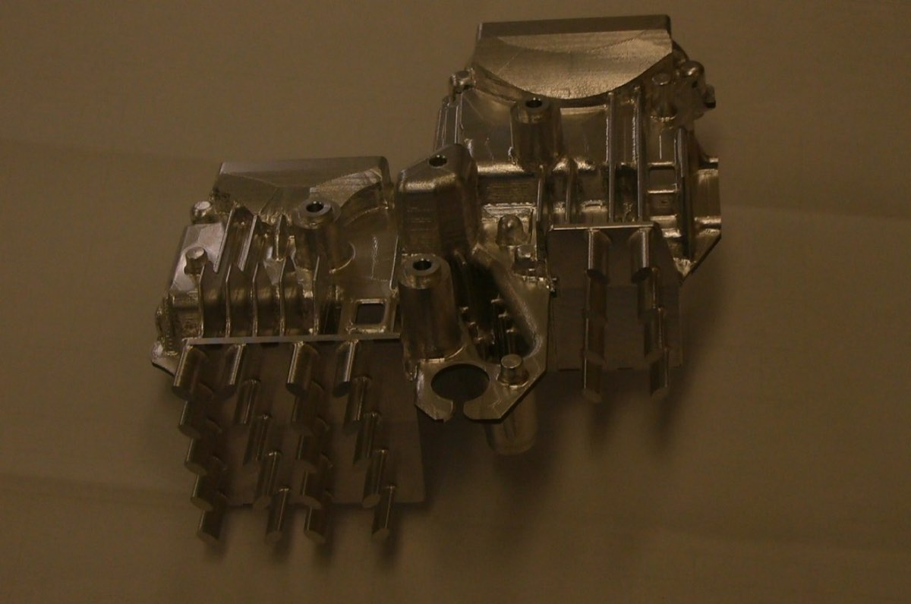
A5052P 総削り出し部品 -
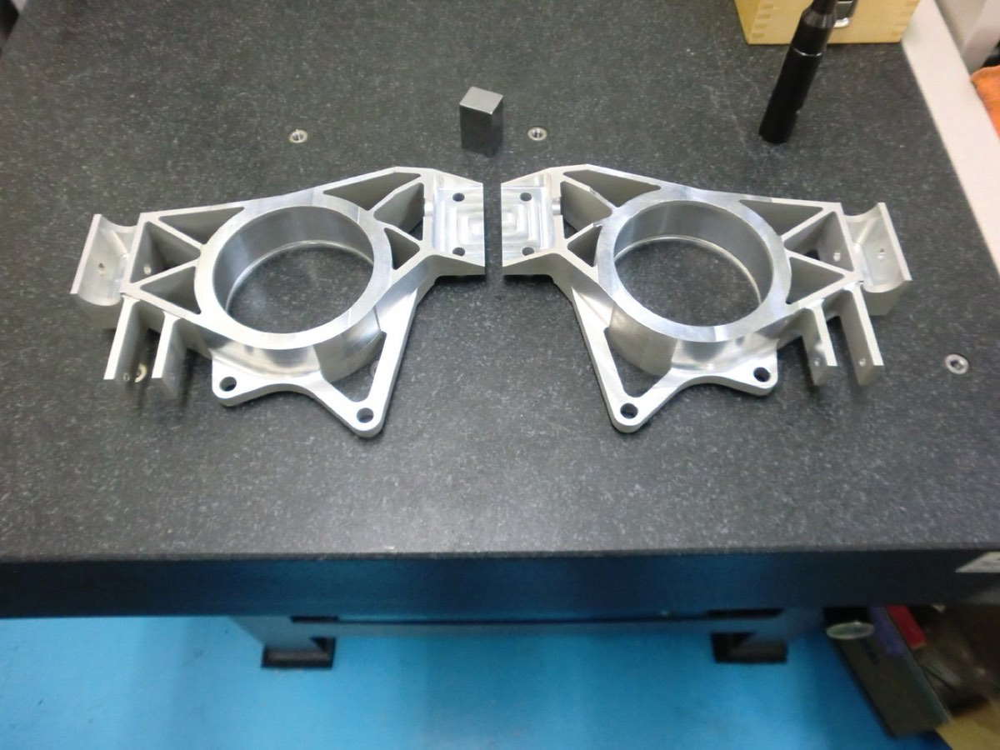
A7075 レース関連部品 -
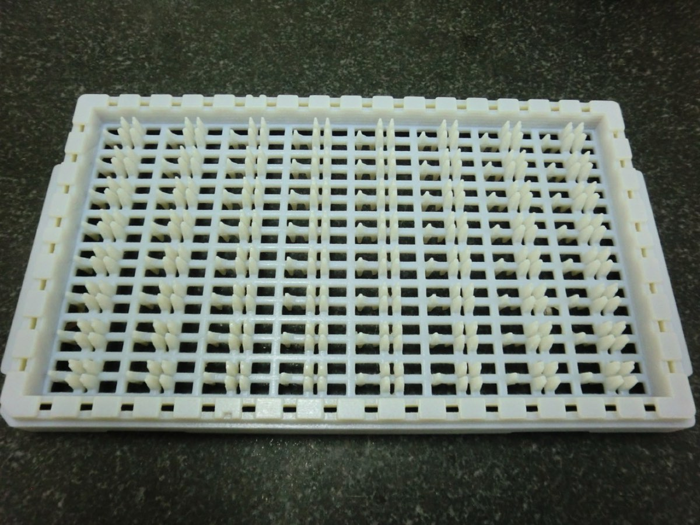
3Dプリンター造形 試作部品パレット -
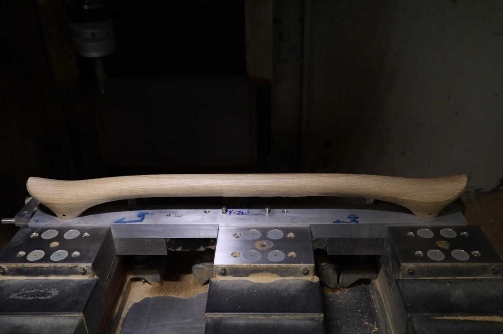
木製材料の切削加工 木製ドアハンドル
すがたかたち株式会社／画像は一例です（製品モデル：DH-IL）
横にスクロールしてご覧いただけます →
設備一覧
本社工場・第二工場あわせて14台。加工機だけでなく、測定機を自社に持っていることが、 寸法を保証できる根拠になっています。
| 区分 | 設備名 | 用途 |
|---|---|---|
| マシニング | マキノ V33i | 精密立形マシニング |
| マシニングセンター 牧野 V56 | 立形マシニング | |
| マシニングセンター 牧野 V77 | 中型部品の立形マシニング | |
| Mazak 立形マシニングセンタ VTC530/20 | 長尺・多面加工 | |
| BROTHER SPEEDIO S700X2 | 高速マシニング | |
| ファナック ロボドリル α14iFLa | 小物部品の量産加工 | |
| 旋盤 | DMG MORI NLX2000 | CNC旋盤加工 |
| 放電 | ワイヤーカット 三菱 NA2400 | 上下異形状・硬質材の輪郭加工 |
| 研削 | Okamoto CNC高精度成形研削盤 HPG500NC | 成形研削 |
| CNC成形研磨機 ナガセ SGE-520-BLD2 PCNC | 成形研磨 | |
| 平面研削盤 日立ビア GHL-B306NS | 平面研削 | |
| 測定 | 三次元測定機 CRYSTA-APEX7106 | 接触式三次元測定 |
| 画像測定器 QV-ELF | 画像による寸法測定 | |
| GOM社 ATOS Core | 非接触三次元測定・データ作成 |
-
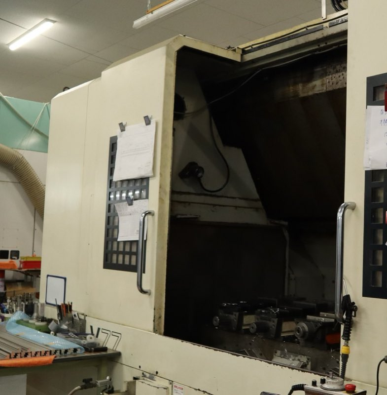
-
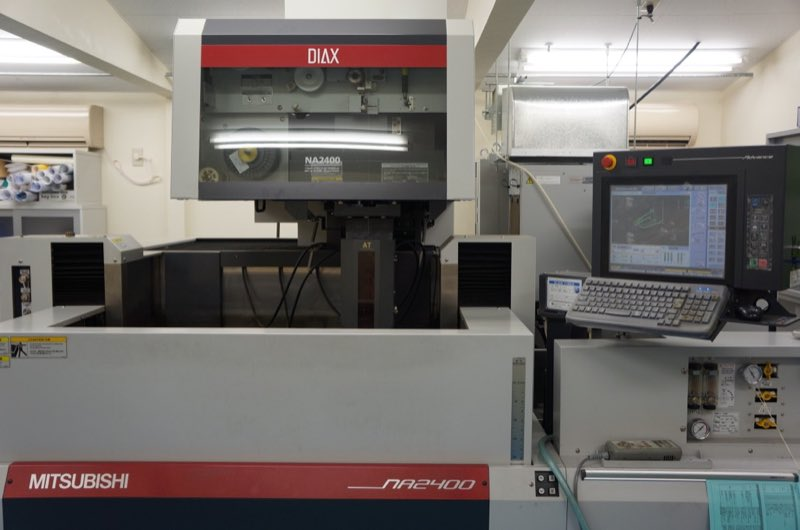
-
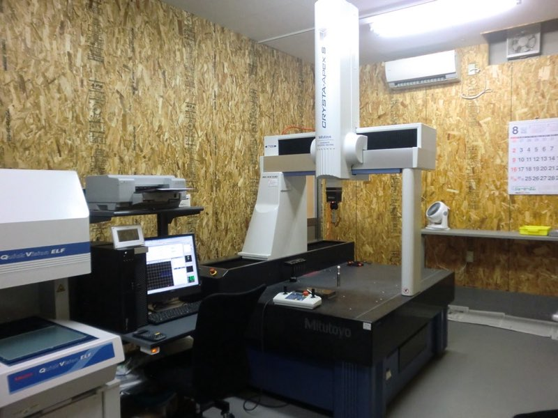
-
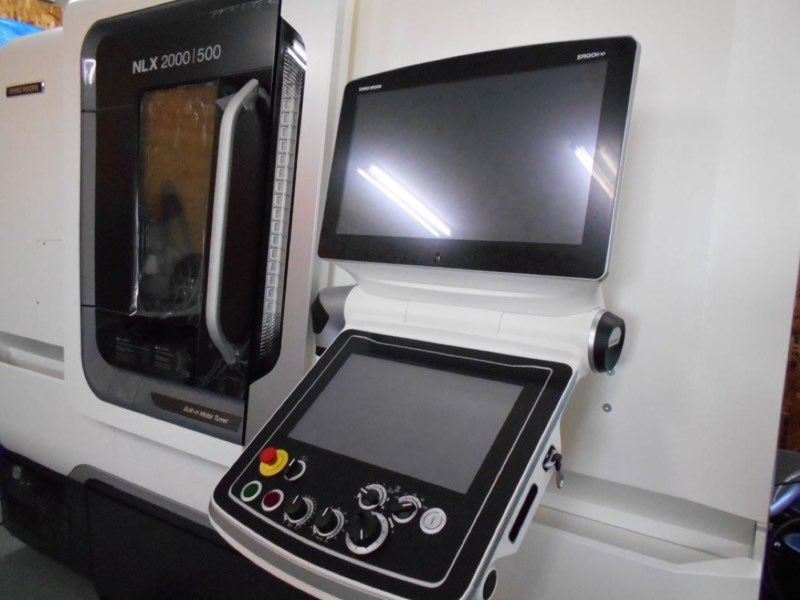
-
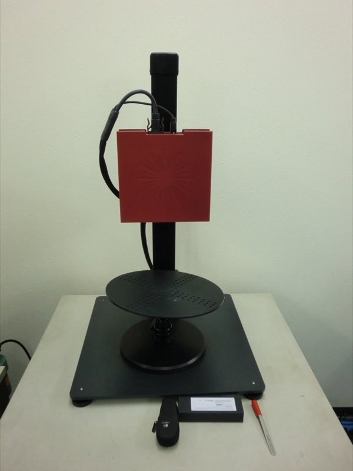
-
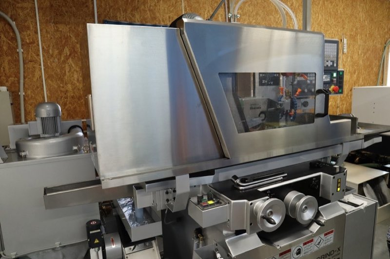
会社概要
- 会社名
- 有限会社佐藤精機
- 代表者
- 代表取締役 佐藤 祐介
- 設立
- 昭和49年9月（1974年）
- 資本金
- 300万円
- 従業員数
- 27名
- 業務内容
-
- 高精密部品加工
- マシニング5軸加工
- ワイヤーカット加工
- 研削加工
- 3Dプリンタにてモデル造形
- 3Dスキャナーにてデータ作成（STL、CADデータ）
- 3Dスキャナーにて無接触3次元測定
- Geomagic DesignX にてデータ編集、作成
- 表面処理（協力工場への発注となります）
- 認証
-
ISO 9001:2015
登録日 2018年4月2日／登録番号 JSAQ2835
登録範囲 産業機械用金属加工部品の製作
よくあるご質問
単品・1個からでも依頼できますか？
はい。単品からの製作を請け負っています。量産だけでなく、多品種小ロットにも 対応しており、小回りの利く対応を心がけています。
表面処理まで含めて任せられますか？
はい。材料の発注から機械加工、表面処理までを一貫して手配し、完成品の状態で 納品します。表面処理は協力工場への発注となります。お客様が工程ごとに 別々の会社とやりとりする必要はありません。
どのくらいの精度・大きさまで対応できますか？
小物精密部品を得意としています。実績として、SUS316製ノズルにφ0.3mmの穴を らせん状に加工したものがあります。検査は三次元測定機 CRYSTA-APEX7106、 画像測定器 QV-ELF、GOM社 ATOS Core による非接触三次元測定で行います。
図面がなくても製作できますか？
3Dスキャナーで現物からデータを作成できます。STL・CADデータの作成、 Geomagic DesignX でのデータ編集に対応しているため、現物はあるが図面がない 部品の製作についてもご相談ください。
対応している材質は？
ステンレス（SUS304・SUS316・SUS420J2）、アルミ（A5052・A7075）、 クロムモリブデン鋼（SCM435）などの加工実績があります。 木材の切削加工も手がけています。
加工のご相談
図面がある場合も、現物しかない場合も、まずはお電話ください。 単品1個からお受けします。
本社直通 0287-88-2347 ／ FAX 0287-88-9689